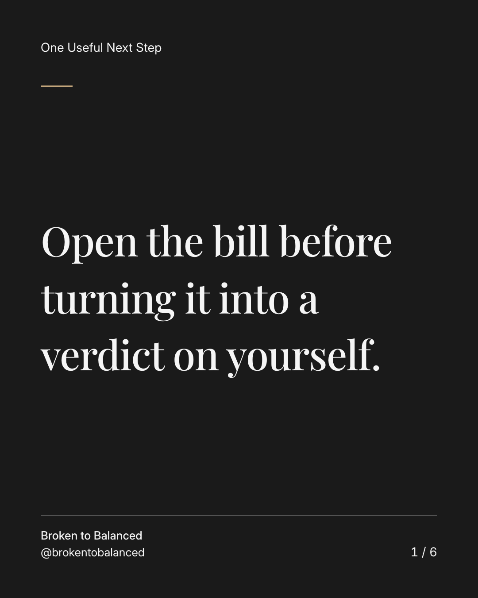
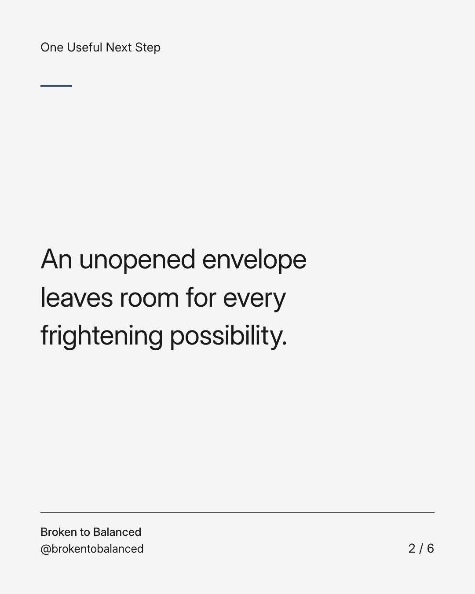
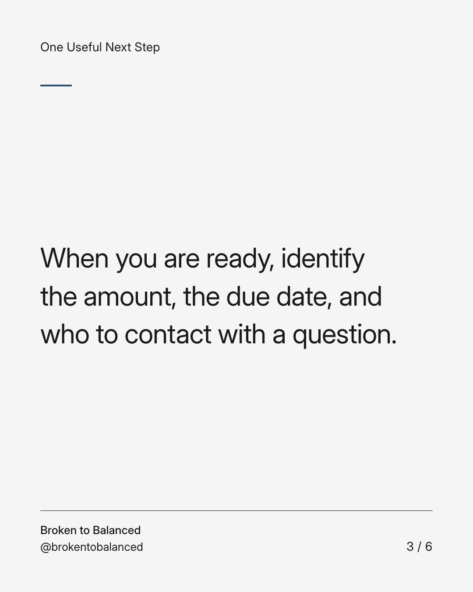
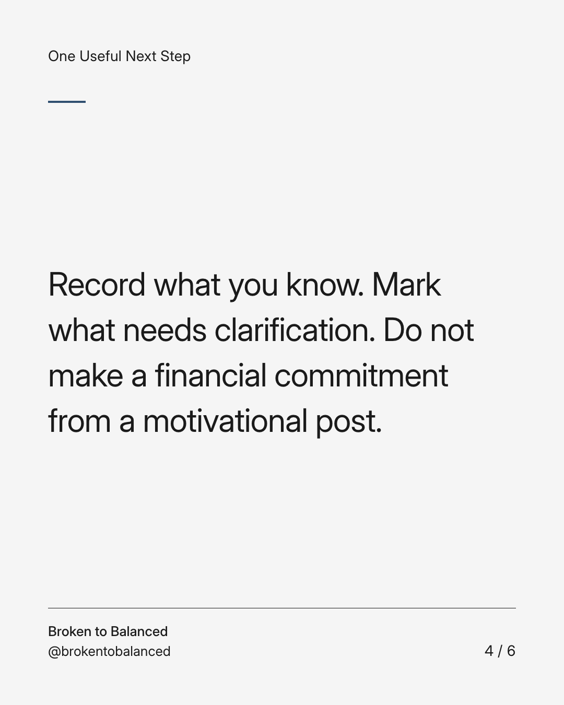
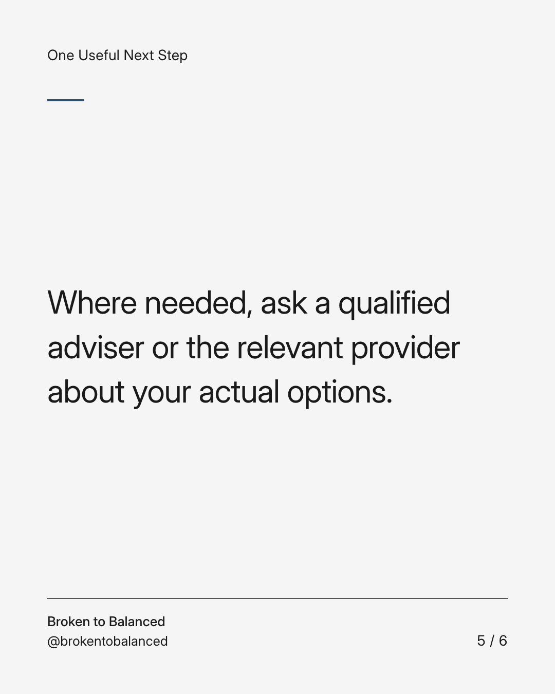
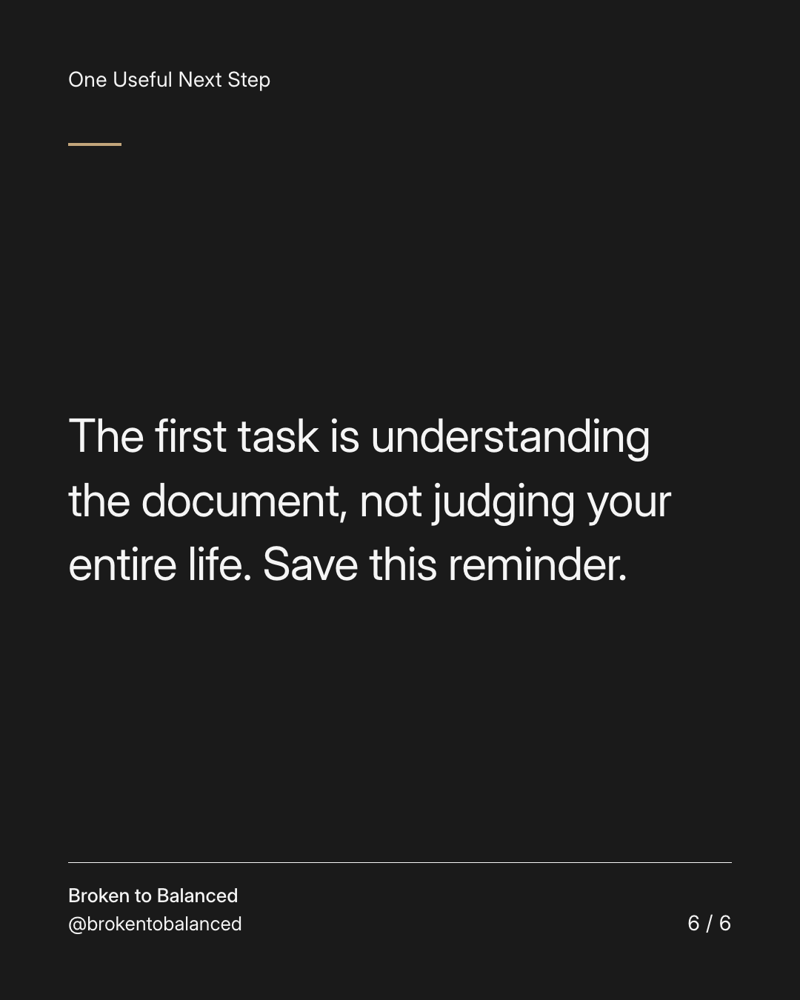

Exact text and accessibility text
Open the bill before turning it into a verdict on yourself.
Slide 1 of 6. Open the bill before turning it into a verdict on yourself.


Exact text and accessibility text
An unopened envelope leaves room for every frightening possibility.
Slide 2 of 6. An unopened envelope leaves room for every frightening possibility.


Exact text and accessibility text
When you are ready, identify the amount, the due date, and who to contact with a question.
Slide 3 of 6. When you are ready, identify the amount, the due date, and who to contact with a question.


Exact text and accessibility text
Record what you know. Mark what needs clarification. Do not make a financial commitment from a motivational post.
Slide 4 of 6. Record what you know. Mark what needs clarification. Do not make a financial commitment from a motivational post.


Exact text and accessibility text
Where needed, ask a qualified adviser or the relevant provider about your actual options.
Slide 5 of 6. Where needed, ask a qualified adviser or the relevant provider about your actual options.


Exact text and accessibility text
The first task is understanding the document, not judging your entire life. Save this reminder.
Slide 6 of 6. The first task is understanding the document, not judging your entire life. Save this reminder.
Exact caption
Plain-text fallback: select and copy the caption.